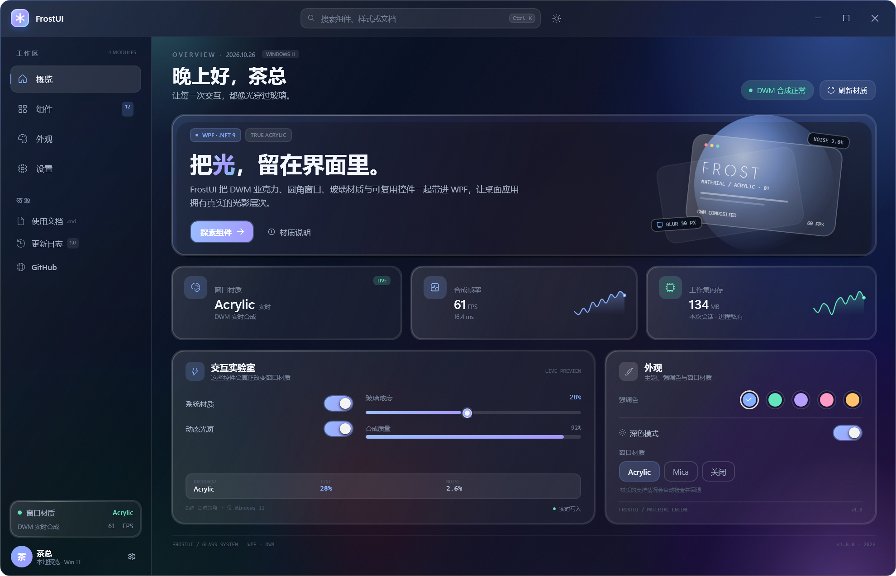
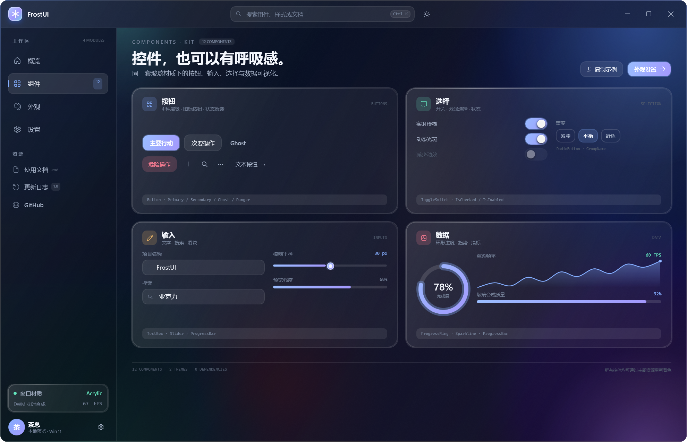
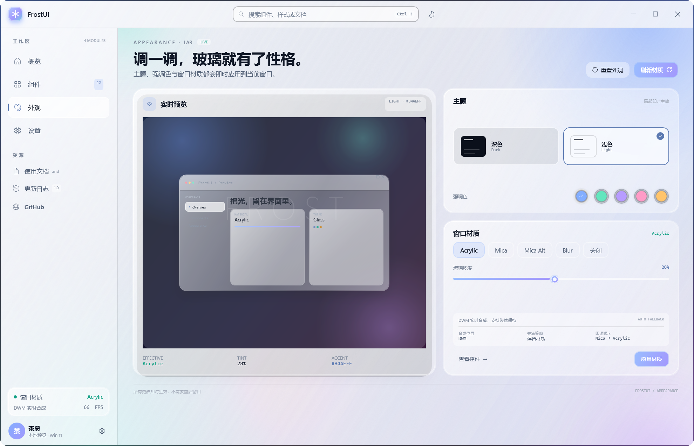

真实的玻璃材质
Web 端使用 backdrop-filter 实时采样背景；WPF 端直接调用 DWM 的 Acrylic / Mica，不是预渲染图片。
WHY FROSTUI
不是一张模糊截图，而是真实的合成材质、可切换的令牌和一组能直接落地的控件。
Web 端使用 backdrop-filter 实时采样背景；WPF 端直接调用 DWM 的 Acrylic / Mica，不是预渲染图片。
深色 / 浅色随时切换，强调色实时重建按钮、开关、图表与焦点描边，所有偏好自动记住。
一个 CSS、一个 JS，直接放进任何页面。没有打包器、没有运行时框架，也不会和你现有的技术栈打架。
颜色、圆角、模糊与间距在 WPF 和 Web 之间一一对应，桌面端与网页端看起来是同一个产品。
可见焦点环、语义化状态、prefers-reduced-motion 降级、无 backdrop-filter 时的回退表面。
FrostWindow、GlassCard、环形进度、迷你趋势图、开关与消息框，全部是普通 WPF 代码，可读、可改、可二次封装。
GET STARTED
Web 直接引用文件；WPF 打包成本地 NuGet 包，或直接把项目引用加进解决方案。
<link rel="stylesheet" href="web/frostui.css">
<script src="web/frostui.js" defer></script>
<body class="f-page">
<a class="f-btn f-btn--primary">开始使用</a>
</body>dotnet pack src/FrostUI/FrostUI.csproj -c Release -o artifacts
dotnet add package FrostUI --source artifacts
<!-- App.xaml -->
<ResourceDictionary Source=
"pack://application:,,,/FrostUI;component/Themes/Controls.xaml" />COMPONENTS · 12
下面所有示例都是真实组件，点击右上角即可复制代码。想改样式？覆盖 --f-* 令牌就够了。
<button class="f-btn f-btn--primary">主要操作</button>
<button class="f-btn">次要操作</button>
<button class="f-btn f-btn--ghost">Ghost</button>
<button class="f-btn f-btn--danger">危险操作</button>
<button class="f-btn f-btn--primary f-btn--lg">大号按钮</button>GLASS CARD
渐变玻璃、细描边、内高光，鼠标移入时有柔和的追光。
<div class="f-card">
<div class="f-card__head">
<span class="f-badge">…</span>
<h3 class="f-card__title">玻璃卡片</h3>
</div>
<p class="f-muted">内容</p>
</div><input class="f-input" type="text">
<input class="f-switch" type="checkbox" checked>
<input class="f-range" type="range" min="0" max="100">
<div class="f-segmented">…</div><span class="f-chip">默认标签</span>
<span class="f-chip f-chip--accent">
<i class="f-chip__dot"></i>已连接
</span>
<span class="f-pill f-pill--live">LIVE</span><div class="f-stat">
<span class="f-stat__label">FRAME RATE</span>
<div class="f-stat__value">60</div>
<span class="f-stat__note">16.4 ms</span>
</div><nav class="f-nav">
<a class="f-nav__item is-active" href="#">概览</a>
<a class="f-nav__item" href="#">外观</a>
</nav>THEMING
下面的控制是真实组件：切换会立刻作用到整页，并写入 localStorage。
所有偏好保存在 localStorage，刷新后保持。
FROSTUI FOR WPF
FrostWindow 直接调用 DWM：Acrylic、Mica、Mica Alt、Blur 与无材质回退。没有 WinUI 依赖，纯 WPF + .NET 9。



<frost:FrostWindow
xmlns:frost="clr-namespace:FrostUI.Controls;assembly=FrostUI"
Style="{StaticResource FrostWindowStyle}"
Backdrop="Acrylic"
TintOpacity="0.28">
<Grid>…</Grid>
</frost:FrostWindow>